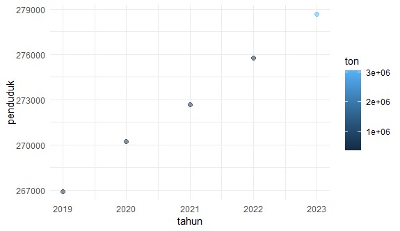

library("tidyverse")
library("readxl")
library("WDI")Pengaruh Jumlah Penduduk terhadap Volume Impor Beras di Indonesia
Metode Penelitian Politeknik APP Jakarta

1 Pendahuluan
1.1 Latar belakang
Beras merupakan makanan pokok Indonesia yang sangat dibutuhkan. Indonesia perlu memastikan ketersediaan beras cukup untuk memenuhi kebutuhan sehari-hari penduduk. Pemenuhan kebutuhan pangan yang cukup merupakan salah satu penentu bagi perwujudan ketahanan pangan nasional (Ratih, 2014). Indonesia sendiri dapat memproduksi beras dalam jumlah tertentu. Namun, ketika produksi dalam negeri tidak dapat mencukupi permintaan pasar, maka Indonesia perlu mengimpor beras dari negara lain.
Banyak faktor yang menyebabkan Indonesia impor beras dan jumlah penduduk di Indonesia merupakan salah satu faktor utamanya. Pemerintah mengantisipasi kelangkaan beras dengan impor beras untuk memenuhi kebutuhan pangan nasional yang terus meningkat. Bercermin dari tingkat konsumsi, di Indonesia seluruh konsumsi beras per kapita tinggi dibandingkan dengan negara lainnya (Feby 2021). Jumlah penduduk yang besar di Indonesia mempengaruhi tingginya permintaan beras, sementara produksi dalam negeri terkadang tidak mencukupi akibat berbagai faktor, seperti perubahan iklim, bencana alam, keterbatasan lahan pertanian, dan kurangnya efisiensi dalam distribusi hasil panen.
1.2 Ruang lingkup
penelitian ini berfokus pada dua variabel, yaitu jumlah penduduk Indonesia dan volume impor beras di Indonesia dengan satuan ton. data yang digunakan merupakan data dari tahun 2019 sampai 2023. data-data tersebut diambil dari badan pusat statistik Indonesia.
Ruang lingkup penelitian ini meliputi analisis terhadap hubungan antara pertumbuhan jumlah penduduk dengan peningkatan volume impor beras. Beras merupakan komoditas dengan permintaan yang inelastis, yaitu perubahan harga hampir tidak menyebabkan perubahan jumlah permintaan konsumen (Zainul, 2015). Penelitian ini juga mempertimbangkan berbagai faktor yang dapat mempengaruhi volume impor beras, seperti ketersediaan beras dalam negeri, kebijakan pemerintah terkait impor beras, dan kebutuhan konsumsi beras masyarakat Indonesia sebagai salah satu kebutuhan pokok.
1.3 Rumusan masalah
1. Apakah jumlah penduduk memiliki pengaruh signifikan terhadap volume impor beras di Indonesia?
1.4 Tujuan dan manfaat penelitian
Penelitian ini bertujuan untuk menganalisis pengaruh jumlah penduduk terhadap volume impor beras di Indonesia menggunakan metode regresi linier sederhana. Selain itu, penelitian ini juga bertujuan untuk mengidentifikasi seberapa besar kontribusi jumlah penduduk dalam menjelaskan variasi volume impor beras di Indonesia. Dengan memahami hubungan ini, penelitian ini diharapkan dapat memberikan gambaran empiris mengenai peran pertumbuhan jumlah penduduk dalam mempengaruhi kebutuhan impor beras di tingkat nasional.
Penelitian ini diharapkan dapat memberikan manfaat bagi pembaca serta memberikan wawasan bagi masyarakat umum mengenai pentingnya memahami dinamika antara jumlah penduduk dan kebutuhan pangan.
1.5 Package
Packages yang digunakan antara lain sebagai berikut:
2 Studi pustaka
2.1 Pengertian Jumlah Penduduk
Jumlah penduduk merujuk pada total individu yang tinggal di suatu wilayah tertentu dalam periode waktu tertentu. Pertumbuhan jumlah penduduk secara langsung memengaruhi kebutuhan dasar masyarakat, seperti pangan, sandang, dan papan. Di Indonesia, jumlah penduduk terus meningkat setiap tahunnya, yang menyebabkan lonjakan kebutuhan terhadap sumber daya, termasuk pangan utama seperti beras.
2.2 Impor Beras
Impor beras adalah kegiatan mendatangkan beras dari luar negeri untuk memenuhi kebutuhan dalam negeri yang tidak tercukupi oleh produksi lokal. Menurut Badan Pusat Statistik (BPS), impor beras di Indonesia dipengaruhi oleh beberapa faktor, seperti produksi beras nasional, kebijakan pemerintah, dan kondisi pasar global. Ketergantungan terhadap impor beras dapat terjadi karena tingginya konsumsi beras di masyarakat yang tidak sebanding dengan kemampuan produksi domestik.
2.3 Hubungan Jumlah Penduduk Dengan Volume Impor Beras
Pertumbuhan jumlah penduduk berdampak signifikan terhadap kebutuhan pangan, termasuk beras. Semakin tinggi jumlah penduduk suatu negara, semakin besar pula kebutuhan konsumsi beras yang harus dipenuhi. Jika produksi beras dalam negeri tidak mencukupi, pemerintah akan mengambil langkah impor untuk menutupi kekurangan tersebut. Di Indonesia, faktor ini menjadi salah satu pendorong utama kebijakan impor beras setiap tahunnya.
3 Metode penelitian
3.1 Data
Berikut adalah data yang digunakan dalam penelitian. Data mencakup jumlah penduduk Indonesia dan volume impor beras pada tahun 2019-2023. Data diambil dari Badan Pusat Statistik Indonesia.
| Tahun | Ton | Penduduk |
|---|---|---|
| 2019 | 444508,8 | 266911,9 |
| 2020 | 356286,2 | 270204 |
| 2021 | 407742 | 272682,5 |
| 2022 | 429207 | 275773,8 |
| 2023 | 3062857,6 | 278696,2 |
#import dataset
library(readxl)
dat<-read_excel('impor-beras.xlsx')
head(dat)library("ggplot2")
library("readxl")
#Plot residual terhadap 'penduduk'
p2<-ggplot(dat,aes(x=penduduk,y=residuals)) +
geom_point(color="green",size=2,alpha=0.6) +
geom_hline(yintercept=0,linetype="dashed",color="red) +
labs(title="Residuals vs. Penduduk",
x="Penduduk",
y="Residuals") +
theme_minimal()
#Print both plots
print(p2)

Grafik menunjukkan peningkatan jumlah penduduk Indonesia dari 267.000 pada 2019 menjadi 279.000 pada 2023. Seiring bertambahnya penduduk, impor beras juga bervariasi tiap tahun. Titik pada grafik menunjukkan jumlah beras impor, dengan warna lebih terang artinya jumlahnya lebih besar. Tahun 2023 tercatat sebagai tahun dengan impor beras tertinggi, yang mungkin disebabkan meningkatnya kebutuhan pangan. Namun, pada 2020 dan 2021, meski penduduk bertambah, impor beras tidak naik signifikan, kemungkinan karena produksi lokal mencukupi atau kebijakan impor yang ketat. Dari grafik ini, kita bisa menyimpulkan bahwa pertumbuhan penduduk mempengaruhi kebutuhan beras, tapi faktor lain seperti kebijakan dan produksi domestik juga penting.
3.2 Metode analisis
Teknik analisis yang digunakan dalam penelitian ini adalah teknik kuantitatif deskriptif. Metode yang dipilih adalah regresi multivariat dengan 2 variabel yaitu jumlah penduduk di Indonesia dan volume impor beras. Rumus yang digunakan adalah:
\[
y=\beta_0 + \beta_1 x+\mu
\] \(\beta_0\) (intercept) = Jumlah Penduduk
\(\beta_1\) (koeifisien) = Volume Impor Beras
\(\mu\) : Error (residual) dari hasil regresi
4 Pembahasan
4.1 Pembahasan masalah
#Model Regresi
model<-lm(penduduk~ton,data=dat)
#Residuals
residuals<-resid(model)
Call:
lm(formula = penduduk ~ ton, data = dat)
Residuals:
1 2 3 4 5
-4579.693 -1045.226 1292.355 4324.362 8.202
Coefficients:
Estimate Std. Error t value Pr(>|t|)
(Intercept) 2.703e+05 2.247e+03 120.305 1.27e-06 ***
ton 2.748e-03 1.584e-03 1.735 0.181
---
Signif. codes: 0 '***' 0.001 '**' 0.01 '*' 0.05 '.' 0.1 ' ' 1
Residual standard error: 3761 on 3 degrees of freedom
Multiple R-squared: 0.5008, Adjusted R-squared: 0.3344
F-statistic: 3.01 on 1 and 3 DF, p-value: 0.1812
4.2 Analisis masalah
Call:
lm(formula = penduduk ~ ton, data = dat)
Residuals:
1 2 3 4 5
-4579.693 -1045.226 1292.355 4324.362 8.202
Coefficients:
Estimate Std. Error t value Pr(>|t|)
(Intercept) 2.703e+05 2.247e+03 120.305 1.27e-06 ***
ton 2.748e-03 1.584e-03 1.735 0.181
---
Signif. codes: 0 '***' 0.001 '**' 0.01 '*' 0.05 '.' 0.1 ' ' 1
Residual standard error: 3761 on 3 degrees of freedom
Multiple R-squared: 0.5008, Adjusted R-squared: 0.3344
F-statistic: 3.01 on 1 and 3 DF, p-value: 0.1812
Hasil analisis regresi menunjukkan bahwa hubungan antara jumlah penduduk dan jumlah impor beras tidak signifikan secara statistik. Koefisien regresi sebesar menunjukkan bahwa setiap peningkatan 1 ton impor beras diperkirakan meningkatkan jumlah penduduk sebesar 2.748 jiwa. Namun, nilai -value sebesar 0.181 (> 0.05) mengindikasikan bahwa hubungan ini tidak cukup kuat untuk dianggap signifikan. Nilai menunjukkan bahwa hanya 50.09% variasi jumlah penduduk yang dapat dijelaskan oleh jumlah impor beras, sementara sisanya dipengaruhi oleh faktor lain. Hasil ini mengindikasikan bahwa jumlah impor beras bukanlah satu-satunya faktor yang memengaruhi jumlah penduduk.
5 Kesimpulan
Hasil analisis regresi menunjukkan bahwa hubungan antara jumlah penduduk dan jumlah impor beras tidak signifikan secara statistik. Koefisien regresi sebesar menunjukkan bahwa setiap peningkatan 1 ton impor beras diperkirakan meningkatkan jumlah penduduk sebesar 2.748 jiwa. Namun, nilai -value sebesar 0.181 (> 0.05) mengindikasikan bahwa hubungan ini tidak cukup kuat untuk dianggap signifikan. Nilai menunjukkan bahwa hanya 50.09% variasi jumlah penduduk yang dapat dijelaskan oleh jumlah impor beras, sementara sisanya dipengaruhi oleh faktor lain. Hasil ini mengindikasikan bahwa jumlah impor beras bukanlah satu-satunya faktor yang mempengaruhi jumlah penduduk. Analisis lebih lanjut dengan data yang lebih besar dan mempertimbangkan variabel lain diperlukan untuk mendapatkan gambaran yang lebih komprehensif.
6 Referensi
Abidin, M. Z. (2015). Dampak kebijakan impor beras dan ketahanan pangan dalam perspektif kesejahteraan sosial. Sosio Informa, 1(3).
Ariska, F. M., & Qurniawan, B. (2021). Perkembangan impor beras di Indonesia. Journal of Agriculture and Animal Science, 1(1), 27-34.
Sari, R. K. (2014). Analisis impor beras di Indonesia. Economics Development Analysis Journal, 3(2).
©Alifia Aini Putri PI3B (230204612)